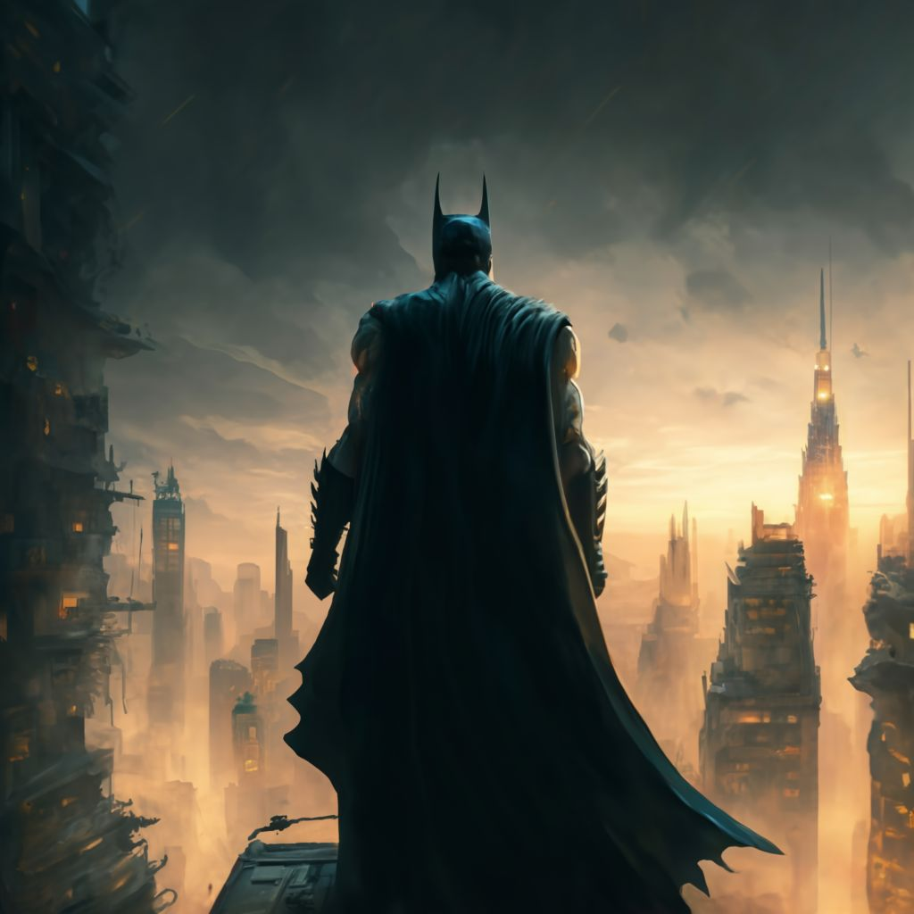

Decidido a no dejar escapar al Joker una vez más, Batman se lanza en persecución del archienemigo, utilizando su conocimiento íntimo de las tácticas y escondites del Joker para predecir su ruta de escape. La decisión de capturar al Joker ahora es crítica; permitirle huir podría resultar en un caos aún mayor en las calles de Gotham, algo que Batman no puede permitirse.
Con una mezcla de concentración intensa y habilidades técnicas, Batman se acerca al dispositivo. El Joker, divertido por el dilema moral y el desafío que ha presentado a su eterno rival, observa con una sonrisa burlona, esperando el momento oportuno para lanzar alguna de sus trampas.
La persecución lleva a Batman a través de una serie de corredores oscuros y pasadizos secretos dentro del museo, cada uno lleno de potenciales trampas y sorpresas del Joker. Sin embargo, Batman, con su determinación de acero y su habilidad para anticiparse a los movimientos de su adversario, logra esquivar cada obstáculo, acercándose cada vez más al Joker.
Con el tiempo en contra, Batman siente cómo los segundos se deslizan entre sus dedos como arena. La tensión en el aire es palpable, y los rehenes observan, contenidos por la esperanza y el miedo. Finalmente, con un clic casi inaudible, el dispositivo es desactivado. Un suspiro colectivo de alivio se extiende por el museo, seguido de una ola de aplausos ahogados.
Con el Joker asegurado y listo para ser devuelto al Asilo Arkham, Batman se toma un momento para observar la ciudad que juró proteger. A pesar del caos de la noche, siente una profunda satisfacción al saber que, por ahora, Gotham es un poco más segura gracias a sus esfuerzos.
La policía de Gotham llega poco después para hacerse cargo del Joker, mientras Batman desaparece en la noche, siempre vigilante, siempre listo para enfrentar la próxima amenaza que se cierne sobre su ciudad. En esta noche, el Caballero Oscuro ha demostrado una vez más que, sin importar lo desesperadas que parezcan las circunstancias, siempre habrá una luz de esperanza para Gotham, siempre y cuando Batman esté allí para protegerla.
|
 |